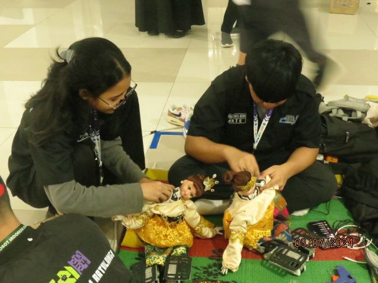

About Us
The Divisi Kontes Robot Indonesia Seni Tari is dedicated to promoting the art of dance through robotics. Our division focuses on creating robots that can perform traditional and modern dance routines, showcasing the intersection of technology and culture.
